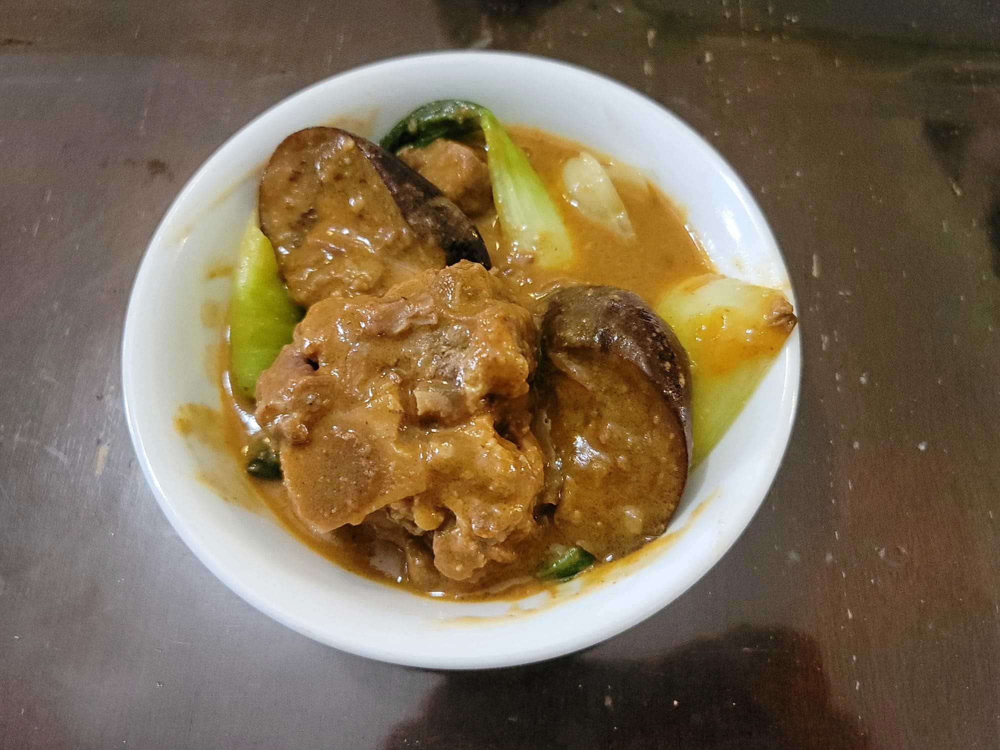

Kare Kare

Ingredients:
- 3 lb Oxtail
- 4 cups Water
- 1 large Onion, diced
- 1 cup Peanuts, ground
- 1/2 cup Peanut butter
- Optional: 1/2 cup Annato seeds, soaked in 1 cup Hot water
- 1/2 cup Sweet rice flour, toasted
- 2 tbsp Canola oil
- 3 cloves Garlic, minced
- 1 Banana blossom flower, quarted and then chopped
- 1 bundle String beans, cut into 2" pieces
- 4 Chinese eggplant, cut into 1" slices
- 1 bundle Bok choy, ends trimmed and leaves separated
- Salt and/or Fish sauce, to taste
- Black pepper, to taste
- Sautéd bagoong
Instructions:
- Heat the water in a large pot and bring to a boil. Add in the oxtail and onions. Reduce to a simmer and let cook for 3 hours, partially covered.
- Add water if the water has reduced significantly. Stir in the ground peanuts, peanut butter, and annato seed water (water only, discard the seeds). Let simmer for 5-7 more minutes. Then stir in the toasted rice flour to thicken and let simmer for 5 more minutes.
- Meanwhile, heat 2 tbsp oil over high heat in a separate large pan. Add the garlic and sauté for 30-60 seconds. Then add in the banana blossom, string beans, and eggplant. Also add in the bok choy now depending on how cooked you would want it. Sauté for 5 minutes and then remove from heat.
- Add all of the vegetables to the kare kare and stir together. Let simmer until the vegetables are cooked to preference. Add salt/fish sauce and pepper to taste. Serve hot with shrimp paste.